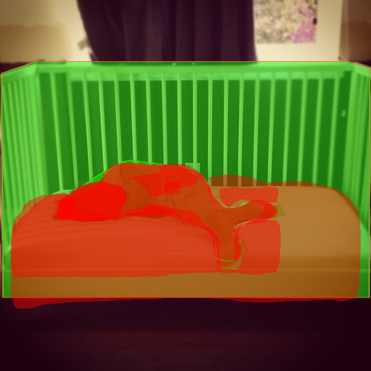
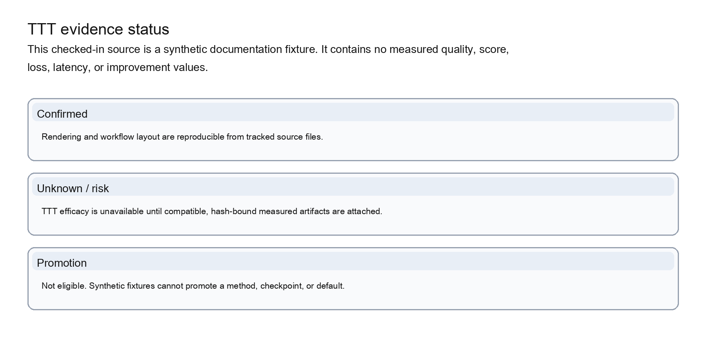

Instance-segmentation report and overlays
A checked demo that pairs a JSON metric report with visible mask overlays.

Expected companion files or fields
instance_seg_demo_report.jsonoverlays/*.pngdemo_config.json
Each example points back to checked-in repository evidence and lists the companion files or fields needed to interpret it.
A checked demo that pairs a JSON metric report with visible mask overlays.

instance_seg_demo_report.jsonoverlays/*.pngdemo_config.jsonDetectron2, MMDetection, YOLOv8, and YOLOX examples converge on the same wrapped predictions interface contract before scoring.
wrapped predictions JSONmeta.export_settingsadapter/source identityThe generated support matrix records implemented, conditional, and unsupported backend paths without presenting a missing lane as a passing result.
benchmark support metadataexplicit support statusskip or failure reason where applicableThe bundled image is a synthetic documentation fixture. It demonstrates the required artifacts and provenance only; it does not establish method efficacy or promote TTT to Stable maturity.

baseline_predictions.jsonmethod_predictions.jsonbefore_after_compare.jsonTTT log and plan